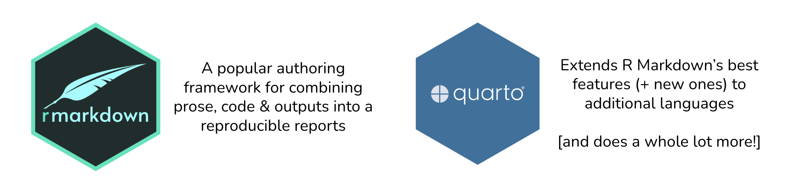
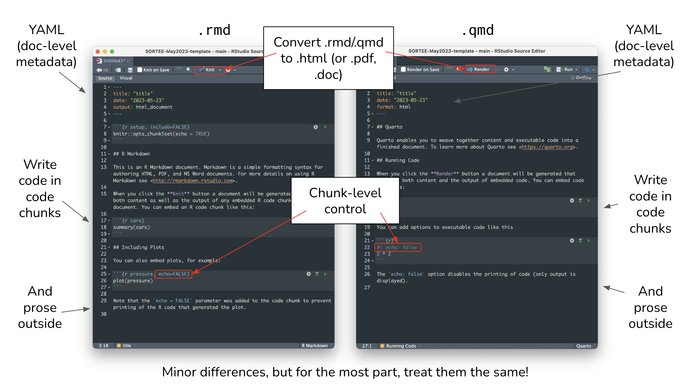
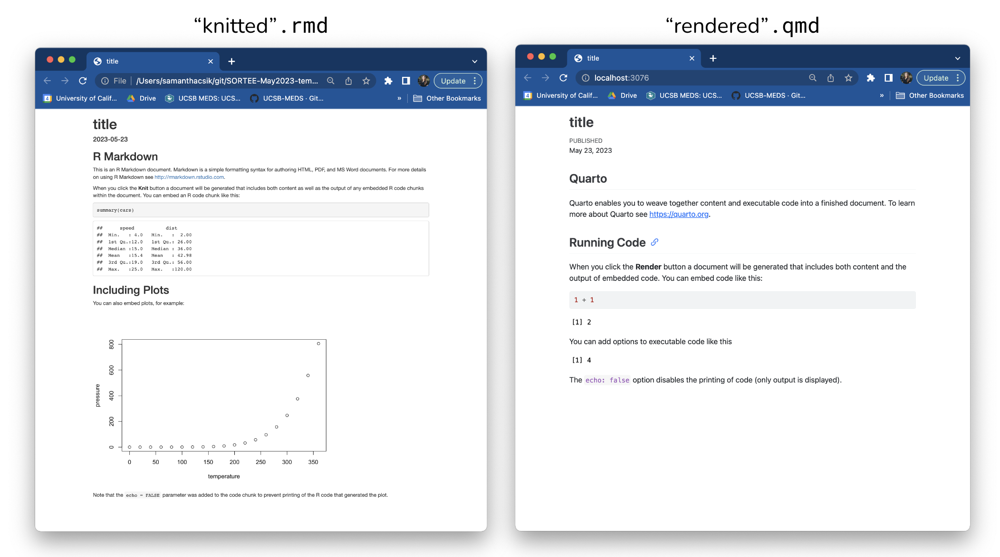
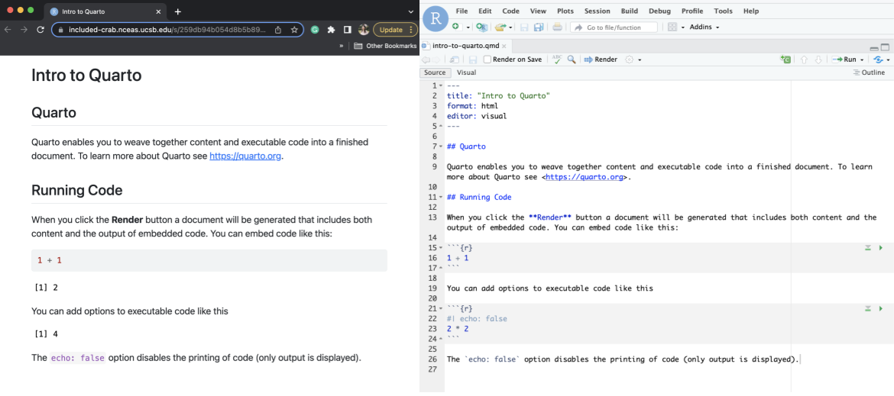
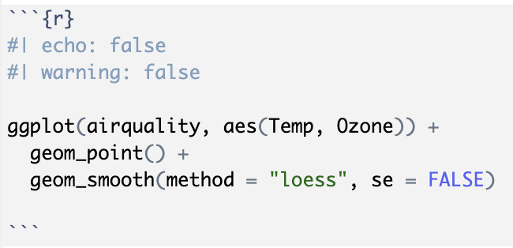
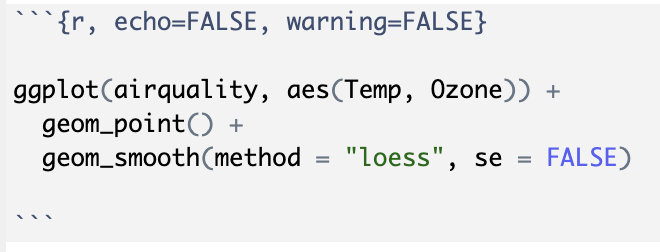
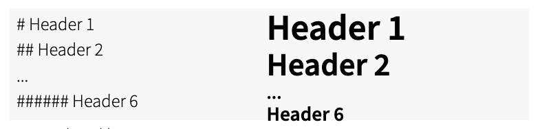
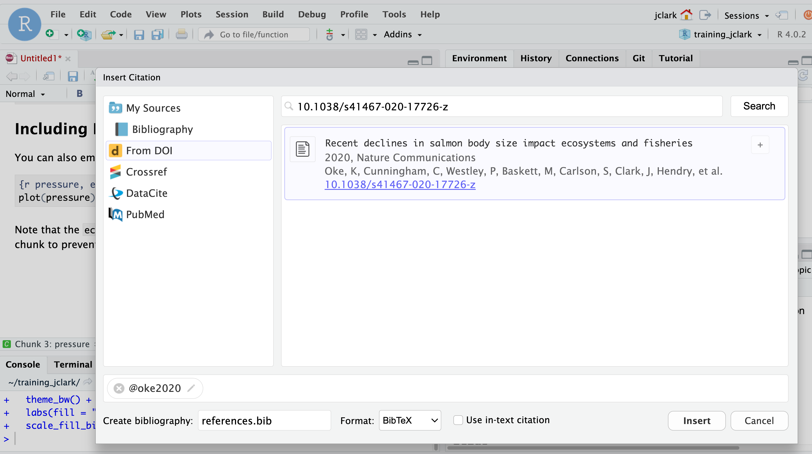

x <- 4 * 8
hights_ft <- c(5.2, 6.0, 5.7)
coef <- 3.14Learning Objectives
- Introduce literate analysis using Quarto (an extension of RMarkdown’s features)
- Learn markdown syntax and run R code using Quarto
- Build and render an example analysis
3.1 Introduction
3.2 Literate Programming
All too often, computational methods are written in such a way as to be borderline incomprehensible even to the person who originally wrote the code! The reason for this is obvious, computers interpret information very differently than people do. In 1984, Donald Knuth proposed a reversal of the programming paradigm by introducing the concept of Literate Programming (Knuth 1984).
“Instead of imagining that our main task is to instruct a computer what to do, let us concentrate rather on explaining to human beings what we want a computer to do.”
If our aim is to make scientific research more transparent, the appeal of this paradigm reversal is immediately apparent. By switching to a literate analysis model, you help enable human understanding of what the computer is doing. As Knuth describes, in the literate analysis model, the author is an “essayist” who chooses variable names carefully, explains what they mean, and introduces concepts in the analysis in a way that facilitates understanding.
Quarto and RMarkdown are an excellent way to generate literate analysis, and a reproducible workflow. These types of files, combine R the programming language, and markdown, a set of text formatting directives.
In an R script, the language assumes that you are writing R code, unless you specify that you are writing prose (using a comment, designated by #). The paradigm shift of literate analysis comes in the switch to RMarkdown or Quarto, where instead of assuming you are writing code, they assume that you are writing prose unless you specify that you are writing code. This, along with the formatting provided by markdown, encourages the “essayist” to write understandable prose to accompany the code that explains to the human-beings reading the document what the author told the computer to do. This is in contrast to writing just R code, where the author telling to the computer what to do with maybe a smattering of terse comments explaining the code to a reader.
Before we dive in deeper, let’s look at an example of what a rendered literate analysis with Quarto/RMarkdown?? can look like using a real example. Here is an example of an analysis workflow written using Quarto.
There are a few things to notice about this document, which assembles a set of similar data sources on salmon brood tables with different formatting into a single data source.
- It introduces the data sources using in-line images, links, interactive tables, and interactive maps.
- An example of data formatting from one source using R is shown.
- The document executes a set of formatting scripts in a directory to generate a single merged file.
- Some simple quality checks are performed (and their output shown) on the merged data.
- Simple analysis and plots are shown.
In addition to achieving literate analysis, this document also represents a reproducible analysis. Because the entire merging and quality control of the data is done using the R code in the Quarto file, if a new data source and formatting script are added, the document can be run all at once with a single click to re-generate the quality control, plots, and analysis of the updated data.
A note on reproducibility
Reproducible analysis allow you to automatize how the figures and the statistics in your analysis are generated. This process also helps your collaborators, your readers and your future self to follow your code trail the leads to the original data, increasing the transparency of your science.
Literate analysis help reduce the mistakes from copying and pasting across software, keeps results and models in sync, and allows you to provide interested readers with more information about the different approaches and analyses you tried before coming up with the final results
3.3 RMarkdown and Quarto
You can identify a Quarto file with the .qmd extension. On the other hand, am RMarkdown file has a .Rmd extension. Both have similar structures and both combine prose with code.Quarto provides a rich support to languages other than R such as Python, Observable, and Julia. It also excels in formatting and layout. Allowing users to customize in details the looks of the rendered documents. On the other hand, RMarkdown is compatible with some languages that Quarto is not, for example bash. Quarto and Rmarkdown are amazing tools to use for collaborative research. During this course e will spend some time learning and using the basics of Quarto and provide some comparisons to RMarkdown.

Now, let’s take a look at the structure of each of these files. The both look for the most part the same with minor differences.

Finally, lets compare each of these files when knitted/rendered.

Again, we see similar outcoumes, with minor differences mainly in formatting (font, style of showing code chunks, etc.)
Both type of documents have three main components:
- YAML metadata to guide the document’s build process
- Code chunks to run
- Prose (Text to display)
Today we are going to use Quarto to run some analysis on data. We are specifically going to focus on the code chunk and text components. We will discuss more about the how the YAML works in an Quarto later in the course.
The YAML
Is the document’s metadata which sets guidelines on how your want the output of your document to look like. It is located at the top of your file, delineated by three dashes (—) at the top and at the bottom of it. It can be used to specify: - Characteristics of your documents such at title, author, date of creation. - Argument to pass on the building process to control the format of the output. - Add additional information such as the bibliography file (and formatting of the references) - Specific parameters for your report (eg: just used a subset of the data).
3.4 A Quarto Document
Let’s open an Quarto file following the instructions below.
Setup
- Open a new Quarto file using the following prompts: File > New File > Quarto Document
- A popup window will appear.
- Give your file a new title, e.g “Introduction to Quarto”.
- Leave the output format as HTML and Engine set to Knitr.
- Then click the “Create” button.
The first thing to notice is that by opening a file, we see the fourth pane of the RStudio pops up. This is our Quarto document which is essentially a text editor. We also see in the upper left side that we are looking at the document under the “Visual editor”. This is probably a familiar way of looking at a text document. To introduce the markdown syntax, we re going to move to the source editor and then come back to the visual editor. In the upper left corner, click on Source. See how the formatting changed? In the Source editor we are looking at the same text, but in markdown syntax. The visual editor on the other hand, allows us to see how markdown is rendered, therefore how is it going to look in our output document.
Let’s have a look at this file — As we saw in the examples above, it looks a little different than a R script. It’s not blank; there is some initial text already provided for you. Lets identify the three main components we introduces before. We have the YAML a the top, in between the two sets of dashed lines. Then we also see white and grey sections. The gray sections are R code chunks and the white sections are plain text.
Let’s go ahead and render this file by clicking the “Render” button, next to the blue arrow at the top of the Quarto file. When you first click this button, RStudio will prompt you to save this file. Save it in the top level of your home directory on the server, and name it something that you will remember (like quarto-intro.Rmd).

What do you notice between the two?
First, the render process produced a second file (an HTML file) that popped up in a second window in the browser. You’ll also see this file in your directory with the same name as your qmd, but with the .html extension. In it’s simplest format, Quarto files come in pairs (same than RMarkdown files) the Quarto document, and its rendered version. In this case, we are rendering, the file into HTML. You can also knit to PDF or Word files and others.
Notice how the grey R code chunks are surrounded by 3 back-ticks and {r LABEL}. The first chunk, in this case 1+1, is evaluated and return the output number (2). Notice the line in the second chunk that says #| echo: false? This is a code chunk option that indicates not to print the code. In the rendered version, we can see the outcome of 2*2 but not the executed code that created the outcome.
The table below show some of the options available to customizing outputs (Quarto.org).
| Option | Description |
|---|---|
#| eval: |
Evaluate the code chunk (if false, just echos the code into the output). |
#| echo: |
Include the source code in output |
#| warning: |
Include warnings in the output. |
#| error: |
Include warnings in the output. |
#| include: |
Catch all for preventing any output (code or results) from being included (e.g.include: false suppresses all output from the code block). |
Note that you can also combine these options by adding more than one to a code chunk.
Important
One important difference between Quarto documents and RMarkdown documents is that in Quarto, chunk options are written in special comment format (#|) at the top of code chunks rather than within the wiggly brackets next to ```{r} at the begging of the chunk. For example:
Quarto code options syntax

RMarkdown code options syntax

It is important to emphasize one more time that in an Quarto (and RMarkdown) document, the gray areas of the document are code, in this case R code because that is what it is indicated in the ```{r} syntax at the start of this gray area. And the white areas of a qmd are in markdown language.
3.5 Markdown Syntax
Let’s start by talking about markdown. Markdown is a formatting language for plain text, and there are only around 15 rules to know.
Notice the syntax in the document we just knitted:
- Headers get rendered at multiple levels:
#,## - Bold:
**word**
There are some good cheatsheets to get you started, and here is one built into RStudio: Go to Help > Markdown Quick Reference.
Important
The hash symbol # is used differently in markdown and in R
- In an R script or inside an R code chunk, a hash indicates a comment that will not be evaluated. You can use as many as you want:
#is equivalent to######. It’s just a matter of style. - In markdown, a hash indicates a level of a header. And the number you use matters:
#is a “level one header”, meaning the biggest font and the top of the hierarchy.###is a level three header, and will show up nested below the#and##headers.

Exercise
- In markdown, Write some italic text, make a numbered list, and add a few sub-headers. Use the Markdown Quick Reference (in the menu bar: Help > Markdown Quick Reference).
- Re-knit your html file and observe your edits.
3.6 The Visual Editor
Quarto has a “what you see is what you mean” (WYSIWYM) editor or Visual editor, which can be a nice way to write markdown without remembering all of the markdown rules. Since there aren’t many rules for markdown, we recommend just learning them especially since markdown is used in many, many other contexts besides Quarto and RMarkdown. For example, formatting GitHub comments and README files.
To access the editor, click the Visual button in the upper left hand corner of your editor pane. You’ll notice that your document is now formatted as you type, and you can change elements of the formatting using the row of icons in the top of the editor pane. Although we don’t really recommend doing all of your markdown composition in the Visual editor, there are two features to this editor that we believe are immensely helpful, adding citations, and adding tables.
3.6.1 Adding citations
To add a citation, go to the visual editor and in the insert drop down, select “Citation.” In the window that appears, there are several options in the left hand panel for the source of your citation. If you have a citation manager, such as Zotero, installed, this would be included in that list. For now, select “From DOI”, and in the search bar enter a DOI of your choice (e.g.: 10.1038/s41467-020-17726-z), then select “Insert.”

After selecting insert, a couple of things happen. First, the citation reference is inserted into your markdown text as [@oke2020]. Second, a file called references.bib containing the BibTex format of the citation is created. Third, that file is added to the YAML header of your Quarto document (bibliography: references.bib). Adding another citation will automatically update your references.bib file. So easy!
3.6.2 Adding table in markdown
The second task that the visual editor is convenient for is generating tables. Markdown tables are a bit finicky and annoying to type, and there are a number of formatting options that are difficult to remember if you don’t use them often. In the top icon bar, the “Table” drop down gives several options for inserting, editing, and formatting tables. Experiment with this menu to insert a small table.
3.7 Code Chunks in Quarto
Every time when opening a new Quarto document we should start by deleting all template text (everything except for the YAML). Then we save the document into the most convenient folder of our project. Now we are ready to start our work.
You can create a new chunk in your Quarto in one of these ways:
- Go to Code in the top menu bar, click “Insert Chunk”
- Type by hand
{r} - Use the keyboard shortcut
- Mac:
command+option+i - Windows:
Ctrl+Alt+i
- Mac:
About code chunks
Each code chunk needs to have an opening syntax ```{r} and a closing syntax ```. Everything in between these lines will be identified as R code.
If I want to write some R code, this is how it would look like.
Hitting return does not execute this command; remember, it’s just a text file. To execute it, we need to get what we typed in the the R chunk (the grey R code) down into the console. How do we do it? There are several ways (let’s do each of them):
- Copy-paste this line into the console (generally not recommended as a primary method)
- Select the line (or simply put the cursor there), and click “Run”. This is available from:
- the bar above the file (green arrow)
- the menu bar: Code > Run Selected Line(s)
- keyboard shortcut: command-return
- Click the green arrow at the right of the code chunk
3.8 Practice: Literate Analysis with ocean water samples
Now that we have gone over the basics, let’s go a little deeper by building a simple, Quarto document that represents a literate analysis using real data. We are going to work with the seawater chemistry data. We are going to download a file named BGchem2008data.csv from the Arctic Data Center repository. Please follow the steps below to download the data and then upload to your RStudio Server data folder.
Setup
- Navigate to the following dataset: https://doi.org/10.18739/A25T3FZ8X
- Download the file
BGchem2008data.csv - Click the “Upload” button in your RStudio server file browser.
- In the dialog box, make sure the destination directory is the
datadirectory in your R project, click “Choose File,” and locate theBGchem2008data.csvfile. Press “OK” to upload the file. - Check your file was successfully uploaded by navigating into your
datafolder in the Files pane.
3.8.1 Getting Started
Experienced R users who have never used Quarto (or RMarkdown) often struggle a bit in the transition to developing analysis in Prose+Code format — which makes sense! It is switching the code paradigm to a new way of thinking.
Rather than starting an R chunk and putting all of your code in that single chunk, below we describe what we think is a better way.
- Open a document and block out the high-level sections you know you’ll need to include using top level headers.
- Add bullet points for some high level pseudo-code steps you know you’ll need to take.
- Start filling in under each bullet point the code that accomplishes each step. As you write your code, transform your bullet points into prose, and add new bullet points or sections as needed.
For this mini-analysis, we will have the following sections and code steps:
- Introduction
- About the data
- Setup
- Read in data
- Analysis
- Calculate summary statistics
- Calculate mean Redfield ratio
- Plot Redfield ratio
- Conclusion
Exercise
Under “About the data”, write a sentence saying where the data set came from, including a hyperlink ti the data. Also mention when was the data downloaded.
Hint: Navigate to Help > Markdown Quick Reference to look-up the hyperlink syntax.
3.8.2 Read in the data
Now that we have outlined our document, we can start writing code! To read the data into our environment, we will use a function from the readr package.
To use a package in our analysis, we need to first make sure it is installed (you can install a package by running install.package("name-of-package")). Once installed you need to load it into our environment using library(package_name). Even though we have installed it, we haven’t yet told our R session to access it. Because there are so many packages (many with conflicting namespaces) R cannot automatically load every single package you have installed. Instead, you load only the ones you need for a particular analysis. Loading the package is a key part of the reproducible aspect of our literate analysis, so we will include it as an R chunk as part of our Setup.
The server should have already installed readr, so add a new R chunk below your Setup header that calls the readr library, and run it. It should look like this:
library(readr)Now, under “Read data”, add a code chunk that uses the read_csv() function to read in your data file.
bg_chem <- read_csv("data/BGchem2008data.csv")Rows: 70 Columns: 19
── Column specification ────────────────────────────────────────────────────────
Delimiter: ","
chr (1): Station
dbl (16): Latitude, Longitude, Target_Depth, CTD_Depth, CTD_Salinity, CTD_T...
dttm (1): Time
date (1): Date
ℹ Use `spec()` to retrieve the full column specification for this data.
ℹ Specify the column types or set `show_col_types = FALSE` to quiet this message.Why read_csv() over read.csv()?
We chose to show read_csv() from the readr package to introduce the concept of packages, to show you how to load packages, and read_csv() has several advantages over read.csv() from base R, including:
- More reasonable function defaults (no
stringsAsFactors!) - Smarter column type parsing, especially for dates
read_csv()is much faster thanread.csv(), which is helpful for large files
Once you run this line in your document, you should see the bg_chem object populate in your environment pane. It also spits out lots of text explaining what types the function parsed each column into. This text is important, and should be examined, but we might not want it in our final document.
Exercise
How would you suppress the warnings (so they don’t show in our output file) form a specific code chunk?
Hint: Code chunk options
3.8.3 Calculate Summary Statistics
As our “analysis” we are going to calculate some very simple summary statistics and generate a single plot. Using water samples from the Arctic Ocean, we will examine the ratio of nitrogen to phosphate to see how closely the data match the Redfield ratio, which is the consistent 16:1 ratio of nitrogen to phosphorous atoms found in marine phytoplankton.
Let’s start by exploring the data we just read. Every time we read a new data set, it is important to familiarize yourself with it and make sure that the data looks as expected. Below some useful functions for exploring your data.
Let’s start by creating a new R chunk and run the following functions. Because this just an exploration and we do not want this chunk to be part of our report, we will indicate that by adding #|eval: false and #| echo: false in the setup of the chunk, that way, the code in this chunk will not run and not be displayed when I knit the final document.
## Prints the column names of my data frame
colnames(bg_chem)
## General structure of the data frame - shows class of each column
str(bg_chem)
## First 6 lines of the data frame
head(bg_chem)
## Summary of each column of data
summary(bg_chem)
## Prints unique values in a column (in this case Date)
unique(bg_chem$Date)To peek out data frame, we can type View(bg_chem) in the console. This will open a tab with our data frame in a tabular format.
Now that we know a more about the data set we are working with lets do some analyses. Under the appropriate bullet point in your analysis section, create a new R chunk, and use it to calculate the mean nitrate (NO3), nitrite (NO2), ammonium (NH4), and phosphorous (P) measured.
Save these mean values as new variables with easily understandable names, and write a (brief) description of your operation using markdown above the chunk. Remember that the $ (aka the subset operator) indicates which column of your data to look into.
nitrate <- mean(bg_chem$NO3)
nitrite <- mean(bg_chem$NO2)
amm <- mean(bg_chem$NH4)
phos <- mean(bg_chem$P)In another chunk, use those variables to calculate the nitrogen: phosphate ratio (Redfield ratio).
ratio <- (nitrate + nitrite + amm)/phosYou can access this variable in your markdown text by using R in-line in your text. The syntax to call R in-line (as opposed to as a chunk) is a single backtick `, followed by the letter “r”, then whatever your simple R command is — here we will use round(ratio) to print the calculated ratio, and finally a closing backtick `. This allows us to access the value stored in this variable in our explanatory text without resorting to the evaluate-copy-paste method so commonly used for this type of task.
So, the text in you Quarto document should look like this:
The Redfield ratio for this dataset is approximately: `r round(ratio)`
And the rendered text like this:
The Redfield ratio for this dataset is approximately 6.
Finally, create a simple plot using base R that plots the ratio of the individual measurements, as opposed to looking at mean ratio.
plot(bg_chem$P, bg_chem$NO2 + bg_chem$NO3 + bg_chem$NH4)
Exercise
Decide whether or not you want the plotting code above to show up in your knitted document along with the plot, and implement your decision as a chunk option.
Render your Quarto document (by pressing the Render button) and observe the results.
How do I decide when to make a new code chunk?
Like many of life’s great questions, there is no clear cut answer. A rule of thumb is to have one chunk per functional unit of analysis. This functional unit could be 50 lines of code or it could be 1 line, but typically it only does one “thing.” This could be reading in data, making a plot, or defining a function. It could also mean calculating a series of related summary statistics (as we’ll see below). Ultimately, the choice is one related to personal preference and style, but generally you should ensure that code is divided up such that it is easily explainable in a literate analysis as the code is run.
3.9 Quarto file paths and environement
As we discussed during our setup session, in computing, a path specifies the unique location of a file on the filesystem. A path can come in one of two forms: absolute or relative.
- Absolute paths start at the very top of your file system, and work their way down the directory tree to the file.
- Relative paths start at an arbitrary point in the file system. In R, this point is set by your working directory.
Quarto has a special way of handling relative paths that can be very handy. When working in an Quarto document, R will set all paths relative to the location of the Quarto file. This way, you don’t have to worry about setting a working directory, or changing your colleagues absolute path structure with the correct user name, etc. If your Quarto document is stored near where the data it analyses are stored (good practice, generally), setting paths becomes much easier!
If you saved your BGchem2008data.csv data file in the same location as your qmd, you can just write read_csv("BGchem2008data.csv") to read it in. Checkout the help page by typing ?read_csv() in the console. This tells you that for this function the first argument should be a pointer to the file. Rstudio has some nice helpers to help you navigate paths. If you open quotes and press tab with your cursor between the quotes, a popup menu will appear showing you some options.
3.9.1 Practice: Quarto and Environments
Let’s walk through an exercise with the document we just created to demonstrate how Quarto handles environments. We will be deliberately inducing some errors here for demonstration purposes.
First, follow these steps:
Setup
- Restart your R session (Session > Restart R)
- Run the last chunk in your Quarto document by pressing the play button on the chunk
Perhaps not surprisingly, we get an error:
Error in plot(bg_chem$P, bg_chem$NO2 + bg_chem$NO3 + bg_chem$NH4) :
object 'bg_chem' not foundThis is because we have not run the chunk of code that reads in the bg_chem data. The R part of Quarto works just like a regular R script. You have to execute the code, and the order that you run it in matters. It is relatively easy to get mixed up in a large Quarto document — running chunks out of order, or forgetting to run chunks.
To resolve this, follow the next step:
Setup continued
- Select from the “Run” menu (top right of the editor pane) “Run All.”
- Observe the
bg_chemvariable in your environment
This is a great way to reset and re-run code when things seem to have gone sideways. It is great practice to do periodically since it helps ensure you are writing code that actually runs and it’s reproducible.
For the next exercise:
- Clean your environment by clicking the broom in the environment pane
- Restart your R session (Session > Restart R)
- Press “Render” to run all of the code in your document
- Observe the state of your environment pane
Assuming your document rendered and produced an html page, your code ran. Yet, the environment pane is empty. What happened?
The Render button is rather special — it doesn’t just run all of the code in your document. It actually spins up a fresh R environment separate from the one you have been working in, runs all of the code in your document, generates the output, and then closes the environment. This is one of the best ways Quarto (or RMarkdown) helps ensure you have built a reproducible workflow. If, while you were developing your code, you ran a line in the console as opposed to adding it to your Quarto document, the code you develop while working actively in your environment will still work. However, when you knit your document, the environment RStudio spins up doesn’t know anything about that working environment you were in. Thus, your code may error because it doesn’t have that extra piece of information. Commonly, library() calls are the source of this kind of frustration when the author runs it in the console, but forgets to add it to the script.
To further clarify the point on environments, perform the following steps:
Setup continued
- Select from the “Run” menu (top right of editor pane) “Run All”
- Observe all of the variables in your environment
What about all my R Scripts?
Some pieces of R code are better suited for R scripts than Quarto or RMarkdown. A function you wrote yourself that you use in many different analyses is probably better to define in an R script than repeated across many Quarto or RMarkdown documents. Some analyses have mundane or repetitive tasks that don’t need to be explained very much. For example, in the document shown in the beginning of this lesson, 15 different excel files needed to be reformatted in slightly different, mundane ways, like renaming columns and removing header text. Instead of including these tasks in the primary Quarto document, the authors chose to write one R script per file and stored them all in a directory. Then, took the contents of one script and included it in the literate analysis, using it as an example to explain what the scripts did, and then used the source() function to run them all from within the Quarto document.
So, just because you know Quarto now, doesn’t mean you won’t be using R scripts anymore. Both .R and .qmd have their roles to play in analysis. With practice, it will become more clear what works well in Quarto or RMarkdown, and what belongs in a regular R script.
3.10 Additional Quarto Resources
- Posit (the organization that developed Quarto) has great documentation, check out Quarto.org
- R for Data Science (2e) (Wickham et al, 2023), this is an awesome book for all R related things. Chapter 29 and 30 are specific to Quarto.